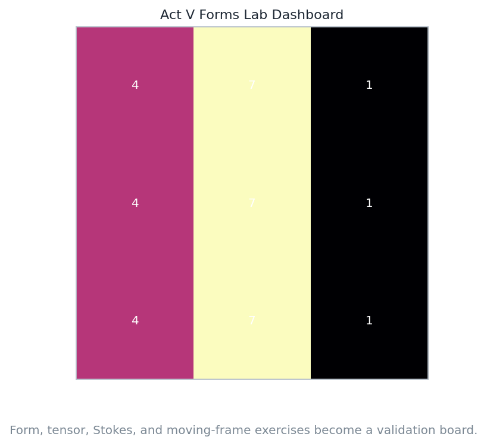
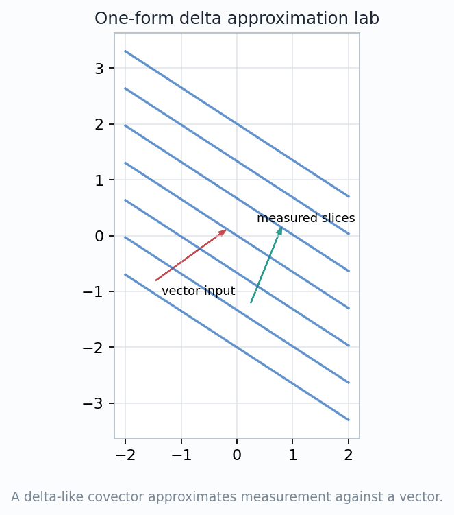
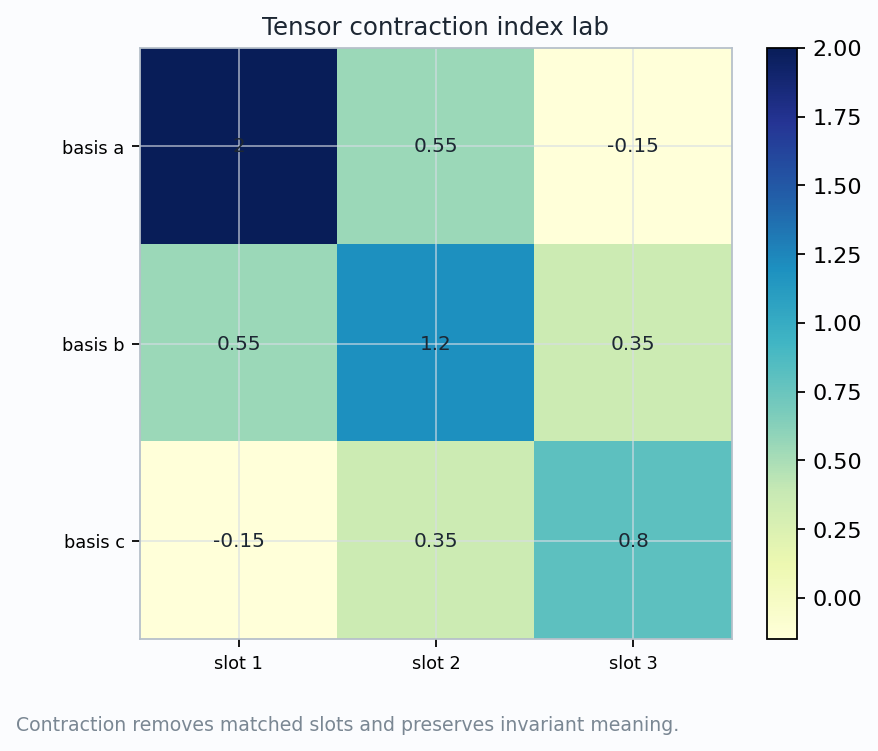
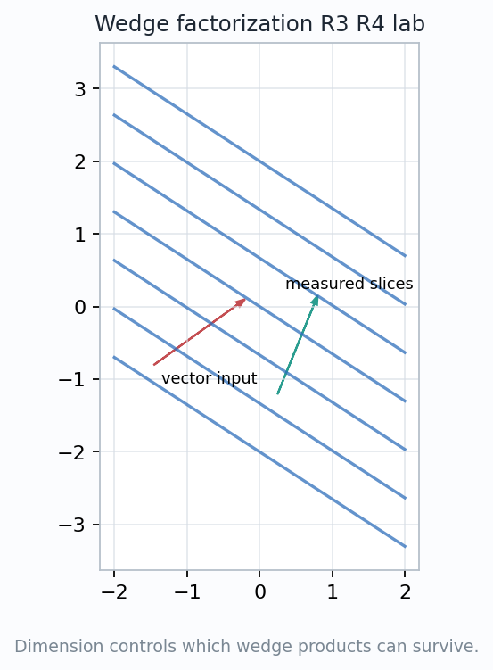
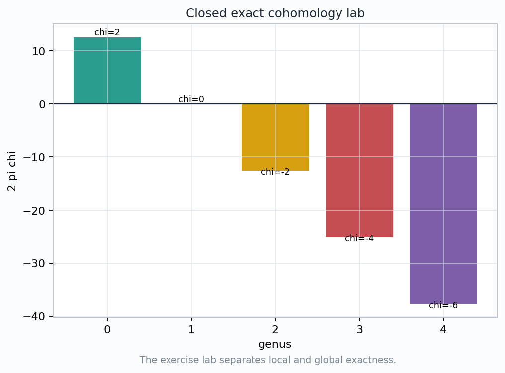
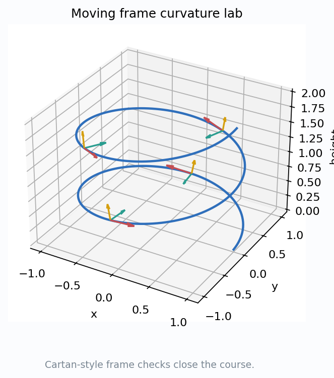

A synthesis laboratory for 1/2/3-forms, exterior derivative, integration, Stokes, and curvature forms.
How can a mixed exercise set become a sequence of invariant checks?
$$\omega,\quad \alpha\wedge\beta,\quad d\omega,\quad \int_C\omega,\quad \Omega^i{}_j$$
Identify the input geometry, choose the form degree, compute the reading, then perturb the representation.

$$k\text{-form} \quad \leftrightarrow \quad k\text{ directed tangent inputs}.$$
\(d\) raises degree by one. Integration asks for a chain whose dimension matches the form degree.
$$\int_{\partial C}\omega=\int_C d\omega,\qquad d^2=0.$$

$$\omega_p(v)=a\,dx_p(v)+b\,dy_p(v).$$
Convert a geometric sentence into a covector, evaluate it on a vector, and check sign under orientation reversal.
Concentrating the slices near a point makes the measurement local without turning the covector into a vector.
If a coordinate change alters both coefficients and vector components but leaves \(\omega(v)\) fixed, the pairing has been understood.
$$T^i{}_{ij}\quad\text{sums over the matched index }i.$$
A repeated slot is not decoration. It states which output/input pair is being fed into the same basis direction and summed.
The metric is the bridge that converts vectors and covectors before a contraction is even legal.


$$\alpha\wedge\alpha=0\quad\text{for a 1-form }\alpha.$$
Factor a form, reorder basis elements, and decide whether a repeated direction forces zero.
The notebook records a nonzero wedge determinant sample, so the orientation test is not vacuous.
$$d:\Omega^k(M)\to\Omega^{k+1}(M).$$
$$d^2=0.$$
The derivative is not just a coordinate recipe; it records how lower-dimensional boundary measurements become higher-dimensional density measurements.
$$\int_{\partial C}\omega=\int_C d\omega.$$
The same bookkeeping tells whether a field has circulation, source density, or conserved flux through a moving boundary.
The boundary orientation is part of the theorem; reversing it changes the sign of the boundary measurement.

closed: \(d\omega=0\),\qquad exact: \(\omega=d\eta\).
Closedness is checked by differentiating the form. It sees local curl, source, or defect.
Exactness asks for a potential. Holes in the domain can block that potential even when \(d\omega=0\).
The notebook records \(2\pi\chi\) totals for genus \(0,1,2,3\), tying curvature integrals to topology.

$$d\theta^i+\omega^i{}_j\wedge\theta^j=0,$$
$$\Omega^i{}_j=d\omega^i{}_j+\omega^i{}_k\wedge\omega^k{}_j.$$
Read off a coframe, compute connection forms, then identify the curvature 2-forms that measure non-flat frame return.
The same pipeline applies when the frame is adapted to a metric with nontrivial radial and angular scale factors.
If the frame changes but the curvature statement survives, the calculation is geometric rather than coordinate cosmetic.
Nonblank visuals, named artifacts, shrinking limit error, nonzero wedge determinant, and \(2\pi\chi\) curvature totals.
lab protocol
1-form reading
slot ledger
wedge survival
global obstruction
curvature forms